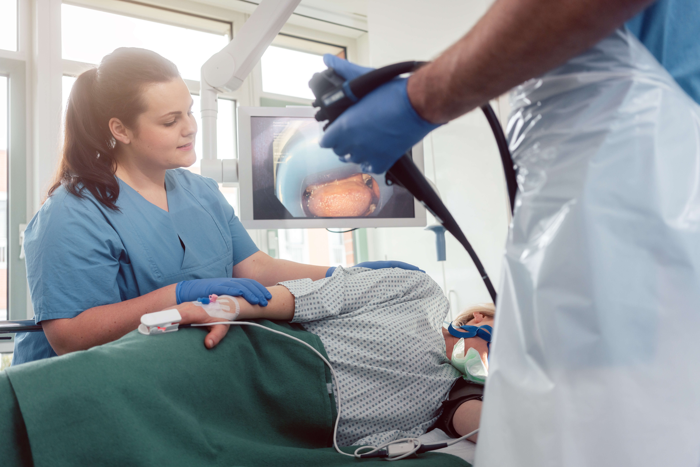
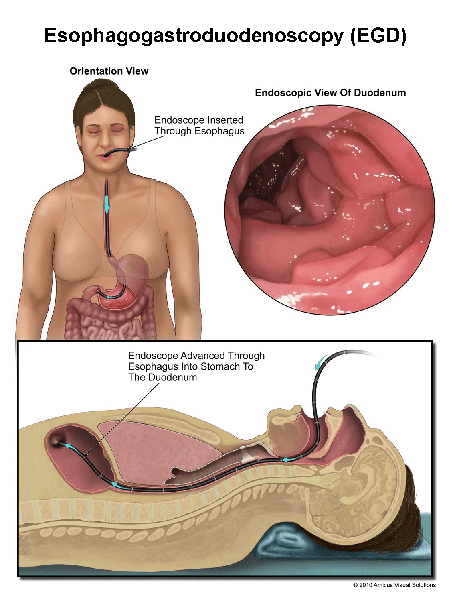
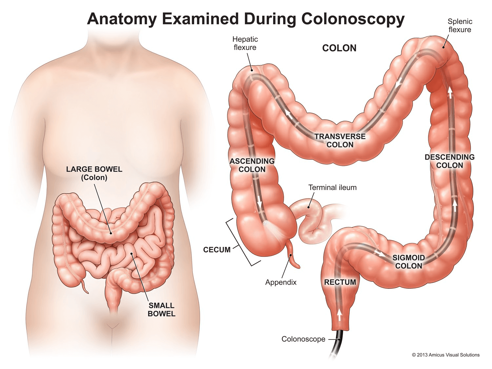
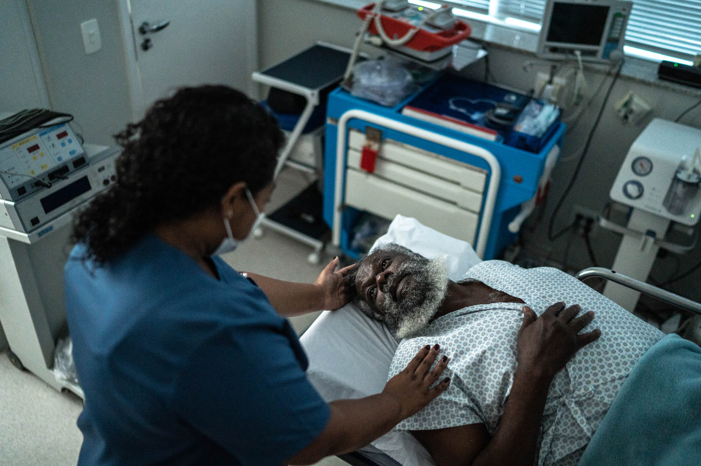

Inner Workings of Endoscopy
Endoscopy Care for Nurses
Endoscopic Intervention
Endoscopies provide a unique avenue for diagnostic and therapeutic intervention using a minimally invasive approach. Diagnostic endoscopy allows for visualization and sampling of tissues. This allows providers to use a variety of operative techniques to diagnose and treat upper GI conditions, such as:
Select the arrows to learn more.
Endoscopic Tissue Sampling
Specimens may be collected to assist in diagnosing malabsorption syndromes, malignancies, and infection. This involves the use of manipulators placed through the endoscope to procure tissue samples. Specimens may be sent for cytologic, histologic, and/or microbiologic analysis.
Commonly used collection techniques include (Cohen & Greenwald, 2023):
Select each tab to learn more.


Communication is vital during specimen collection. If multiple specimens are planned, the scrub person should consider numbering and recording the description of each specimen as they are collected. The nurse should also maintain a record of the specimens as they are announced, this way the care and handling of each specimen can be double-checked and confirmed with the surgeon before labeling it.
Upper Endoscopy

An upper endoscopy is performed through the nose or mouth, depending on the targeted anatomy and patient considerations. It may be performed for diagnostic evaluation, screening, or therapeutic intervention. There are various scopes and types of upper endoscopy procedures used to evaluate the upper GI tract, such as (American Society of Clinical Oncology, 2019; AORN, n.d.):
Procedure | Scope | Targeted anatomy |
|---|---|---|
Procedure Esophagoscopy | Scope Esophagoscope | Targeted anatomy Esophagus |
Procedure Gastroscopy | Scope Gastroscope | Targeted anatomy Lining of the stomach |
Procedure Esophagogastroduodenoscopy (EGD) | Scope Gastroscope | Targeted anatomy Oropharynx, esophagus, stomach, and proximal duodenum |
Procedure Small bowel enteroscopy | Scope Enteroscope | Targeted anatomy Entire small bowel |
Procedure Transnasal esophagoscopy | Scope Esophagoscope | Targeted anatomy Esophagus |
Endoscopic techniques can be combined with ultrasound imaging, such as an endoscopic ultrasound (echo-endoscopy), which allows for visualization of internal organs and structures within the chest and abdomen. Ultrasound-guided biopsy retrieval is a method for verifying accurate tissue sampling. Wireless endoscopic technology involves swallowing a capsule-sized endoscopy camera that takes internal images throughout the GI tract from the throat to the rectum.
Indications
An upper endoscopy is performed for the evaluation and possible treatment of various conditions, including but not limited to (Cohen & Greenwald, 2023):
An upper endoscopy is performed for the evaluation and possible treatment of various conditions, including but not limited to (Cohen & Greenwald, 2023):
Select the arrows to learn more.

Esophagogastroduodenoscopy
During an esophagogastroduodenoscopy (EGD), a gastroscope provides direct visualization of the esophagus, stomach, and proximal duodenum, which is the first portion of the small intestine. If required, an enteroscope (a longer endoscope) can be advanced beyond the ligament of Treitz and into the jejunum. This is called a small bowel enteroscopy (Feussner et al., 2015).
During an esophagogastroduodenoscopy (EGD), a gastroscope provides direct visualization of the esophagus, stomach, and proximal duodenum, which is the first portion of the small intestine. If required, an enteroscope (a longer endoscope) can be advanced beyond the ligament of Treitz and into the jejunum. This is called a small bowel enteroscopy (Feussner et al., 2015).
Intra-Procedure
The patient is placed in the left lateral position, lying on the left side with the knees slightly flexed (AORN, n.d.). A plastic mouthpiece is inserted into the patient’s mouth to relax the jaw and protect both the teeth and endoscope.
The nurse should assist the physician by maintaining the patient’s head in a neutral position that is slightly flexed forward. The patient’s airway is maintained with a slight chin-lift maneuver. Oral secretions are suctioned as required. As the physician advances the endoscope, air is introduced to improve visibility of the GI tract.
A compromised airway is a serious complication that can occur during endoscopy. The nursing priority during the procedure is to monitor the patient, including the airway, vital signs, skin color, and level of pain and consciousness. The nurse should be able to visualize the patient throughout the procedure, and monitoring equipment should be used.
Post-Procedure
As per institutional policy, observe and record vital signs. Do not allow the patient to intake anything by mouth until the gag reflex returns, and any difficulties in swallowing should be noted. The abdomen should be palpated and bowel sounds evaluated for complications. The potential complications of EGD are (Cohen & Greenwald, 2023).
As per institutional policy, observe and record vital signs. Do not allow the patient to intake anything by mouth until the gag reflex returns, and any difficulties in swallowing should be noted. The abdomen should be palpated and bowel sounds evaluated for complications. The potential complications of EGD are (Cohen & Greenwald, 2023).
- Infection
- Pulmonary aspiration
- GI or esophageal perforation
- Hemorrhage
- Cardiopulmonary complications
You should monitor for:
- Abdominal distention
- Vomiting
- GI bleeding
- Chest pain
- Palpitations
- Severe heartburn
- Difficulty breathing
Knowledge Check
Flag/Unflag this Question
What instrument is used to remove large polyps under 20 cm during an esophagoscopy?
Small polys are removed using biopsy forceps and snares are used for larger polyps under 20 cm. Additional techniques may be necessary for removing polyps larger than 20 cm.
Small polys are removed using biopsy forceps and snares are used for larger polyps under 20 cm. Additional techniques may be necessary for removing polyps larger than 20 cm.
Incorrect, try again
Lower Endoscopy
A lower endoscopy is performed through the anus and it allows for evaluation of the lower GI tract and rectum. They are performed for the evaluation and treatment of lower GI bleeding, the detection and excision of colon polyps, the diagnosis of diverticulosis and diverticulitis, and the assessment and treatment of inflammatory bowel disease.
Procedure | Scope | Targeted anatomy |
|---|---|---|
Procedure Colonoscopy | Scope Colonoscope | Targeted anatomy Rectum, colon, large intestine |
Procedure Anoscopy | Scope Anoscope | Targeted anatomy Anus |
Procedure Sigmoidoscopy | Scope Sigmoidoscope | Targeted anatomy Rectum, sigmoid colon, most of the descending colon |
Procedure Proctoscopy | Scope Proctoscope | Targeted anatomy Anal cavity, rectum |
Select each tab to learn more.
Colonoscopy

Colonoscopy is an endoscopic technique using a high-definition white-light colonoscope to evaluate the colon, rectum, and terminal ileum for therapeutic, screening, and diagnostic purposes (Lee & Saltzman, 2023). It is an effective, minimally invasive means of examining the large intestine from the rectum to the ileocecal valve.
The possibility of performing a biopsy or removing an abnormality via direct visualization of the mucosal wall gives the colonoscopy an important advantage over radiological examinations of the colon, such as the virtual colonoscopy.
An optical colonoscopy is considered the gold standard for the examination and screening of the large intestine for evidence of colon cancer.
Colonoscopy and Cancer Screening
Even in the absence of suggestive symptoms, colonoscopies are an important component of the diagnostic process in colon cancer screening. According to a multi-society task force in 2008, detecting and treating early-stage colorectal cancer and removing adenomatous polyps, which are precursors to colon adenocarcinomas, can lead to a decrease in colorectal cancer mortality (He et al., 2018).
Even in the absence of suggestive symptoms, colonoscopies are an important component of the diagnostic process in colon cancer screening. According to a multi-society task force in 2008, detecting and treating early-stage colorectal cancer and removing adenomatous polyps, which are precursors to colon adenocarcinomas, can lead to a decrease in colorectal cancer mortality (He et al., 2018).
The American Cancer Society (ACS) (2020) recommends that people with an average risk of colon cancer begin colon cancer screening at age 45 by one of four methods:
- Flexible sigmoidoscopy every 5 years
- Colonoscopy every 10 years
- Double-contrast barium enema every 5 years
- CT colonography (virtual colonoscopy) every 5 years
People falling in the higher risk grouping, who have a family history of colorectal cancer or adenomatous polyps, should begin their screening protocols at age 40 years. People who have had colorectal cancer and/or adenomatous polyps should be rescreened more often — usually within 2 to 6 months after adenoma removal and once again within 3 years after the polyps are removed.
It is recommended that individuals who fall into the very high-risk group begin their screening regimens much earlier (ACS, 2018). These patients include those with:
- Familial adenomatous polyposis diagnosed with or without genetic testing, who should begin screening between 10 and 12 years of age
- Those with Lynch syndrome or hereditary nonpolyposis colon cancer, who are at increased risk based on family history and should begin screening at 20 to 25 years of age or 10 years before the age of the youngest afflicted individual in their immediate family
Eight years after it affects the large intestine, inflammatory bowel disease (IBD), such as Crohn’s disease or ulcerative colitis, becomes a significant risk factor for cancer. Those with IBD who develop left-sided colitis after 12 to 15 years are also at significant risk for cancer (ACS, 2018).
Bowel Preparation Before Colonoscopy
A good bowel preparation is one of the most important aspects of any colorectal cancer screening regimen, as a well-prepared colon will adequately delineate the colonic mucosa, enabling the physician to thoroughly assess for any abnormalities. Strict adherence to the physician’s recommended bowel preparation regimen is extremely important; the procedure may have to be suspended before completion in the case of inadequate bowel preparation.
A good bowel preparation is one of the most important aspects of any colorectal cancer screening regimen, as a well-prepared colon will adequately delineate the colonic mucosa, enabling the physician to thoroughly assess for any abnormalities. Strict adherence to the physician’s recommended bowel preparation regimen is extremely important; the procedure may have to be suspended before completion in the case of inadequate bowel preparation.

A significant number of colonoscopies, around 20-24%, have been reported to have poor bowel preparations (Martin et al., 2016). This means that approximately 1 in 4 patients who undergo this examination are not adequately prepared, which can result in an inadequate evaluation of their large intestine. To address this issue, the ASGE updated its guidelines for pre-colonoscopy bowel preparations (Saltzman et al., 2015). The split-dose method is now recommended, which has been found to be more effective in cleansing the colon than previous methods. This method involves the patient drinking half of the bowel preparation, typically polyethylene glycol-electrolyte solution, the evening before the procedure and the other half 3 to 8 hours before the examination. This approach is safer and more tolerable to patients, as it is lower in volume but more effective in preparing the colon for the examination (Saltzman et al., 2015).
Research shows that split-dosing increases adenoma detection rates and improves the overall quality of bowel preparations (Radaelli et al., 2017). In addition, both sodium phosphate and magnesium citrate-based evacuants are no longer recommended due to the risks they pose for electrolyte and renal imbalances and disruptions (Saltzman et al., 2015).
To increase patient adherence to bowel preparation regimens, a reduced-volume bowel cleansing regimen consisting of 2 liters of the polyethylene glycol-electrolyte solution taken in conjunction with a total of 4 delayed-release 5 mg bisacodyl (Dulcolax®) tablets was introduced into the marketplace. Studies have found that this preparation cleansed as effectively as the larger volume of 4-liter bowel preparations that preceded it (Saltzman et al., 2015).
Bowel preparation solutions may not taste good, and some people may find it easier to drink if the solution is cold. Patients should drink the solution quickly, as drinking slowly will not clean out the colon as effectively or efficiently (Saltzman et al., 2015). Watery stools usually begin within 30 to 60 minutes after the first glass, with the intestines usually completely emptied within 4 hours.
Patients may find it comforting to know that once the bowel preparation is completed and the colon is clean, they have completed what many regard as the most unpleasant portion of the process. For a split-dose prep, remind the patient to ask the physician how many hours before the start of the procedure the second dose should be completed.
Recent ASGE guidelines recommend a low-residue diet replace the clear liquid diet on the day before the procedure, stating that it has proven to be equally as effective and is preferable to patients (Saltzman et al., 2015). These diet recommendations have shown to be more tolerable to patients, improving adherence to the bowel preparation and patients’ satisfaction with it (Nguyen et al., 2015).
However, regardless of the laxative chosen and the diet consumed, the patient should drink enough clear liquids the day before the procedure to prevent dehydration. The updated guidelines also urge physicians to document the quality of the bowel preparations of patients they have scoped using validated scoring systems, and, if required in the case of inadequate bowel preparation, to reschedule the patient for a repeat procedure within 1 year (He et al., 2018).
Patients with a history of the following conditions may require more in-depth bowel preparations and should follow physician guidelines for food and liquid restrictions:
- Chronic constipation
- Poor bowel preparation
- Chronic pain medication regimen
Intra-Procedure
The patient should be positioned in the left lateral position, with their right side facing upwards, knees slightly bent, and head resting on a small pillow. A pad should be placed under the buttocks. The physician will then carry out a digital exam to check for distal masses, dilate the opening, and assess the distal colon preparation.
The patient should be positioned in the left lateral position, with their right side facing upwards, knees slightly bent, and head resting on a small pillow. A pad should be placed under the buttocks. The physician will then carry out a digital exam to check for distal masses, dilate the opening, and assess the distal colon preparation.
Next, the distal end of the instrument is lubricated, and the physician slowly inserts the scope into the rectum and advances it. Once the desired level is reached, the physician withdraws the instrument slowly while meticulously examining the colon. This slow withdrawal and attention to detail are associated with higher adenoma detection rates (Rex et al., 2015).
Looping
The shaft of the scope is adjusted to be stiffer or looser during a colonoscopy depending on the desired flexibility needed to pass through bends or tight spaces of the bowel to prevent looping (Prechel et al., n.d.). Looping is a common occurrence that involves the shaft of the scope forming into a loop as resistance is encountered within the bowel. This coiling of the scope and intestines prevents the provider from advancing the scope forward. It can cause significant pressure and pain for the patient too, and even perforation at times (Lee & Saltzman, 2023).
The shaft of the scope is adjusted to be stiffer or looser during a colonoscopy depending on the desired flexibility needed to pass through bends or tight spaces of the bowel to prevent looping (Prechel et al., n.d.). Looping is a common occurrence that involves the shaft of the scope forming into a loop as resistance is encountered within the bowel. This coiling of the scope and intestines prevents the provider from advancing the scope forward. It can cause significant pressure and pain for the patient too, and even perforation at times (Lee & Saltzman, 2023).
Post-Procedure

Monitoring of the patient post-colonoscopy is similar to the care provided after an upper endoscopy. Observe the patient’s abdomen for distention. Encourage the patient to pass flatus to relieve abdominal pressure from the insufflation of air during the procedure.
Complications may include perforation, infection, and hemorrhage. Monitor for the following and report concerning findings to the physician:
Select the arrows to learn more.
Key Takeaways
- Endoscopies are minimally invasive procedures used for both diagnosis and treatment of various GI conditions.
- Specimens may be collected to help diagnose malabsorption syndromes, malignancies, and infection.
- Colonoscopy is a common screening tool for colon cancer and should begin at age 45 for those at average risk.
- Bowel preparation is crucial for a successful colonoscopy.
- Watch for signs and symptoms of complications during and after endoscopy procedures and notify the doctor immediately if any concerning symptoms arise.